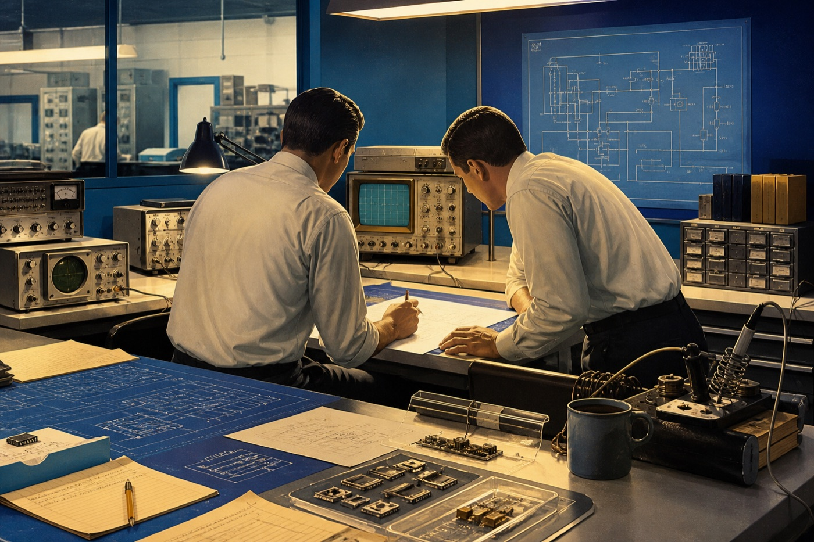
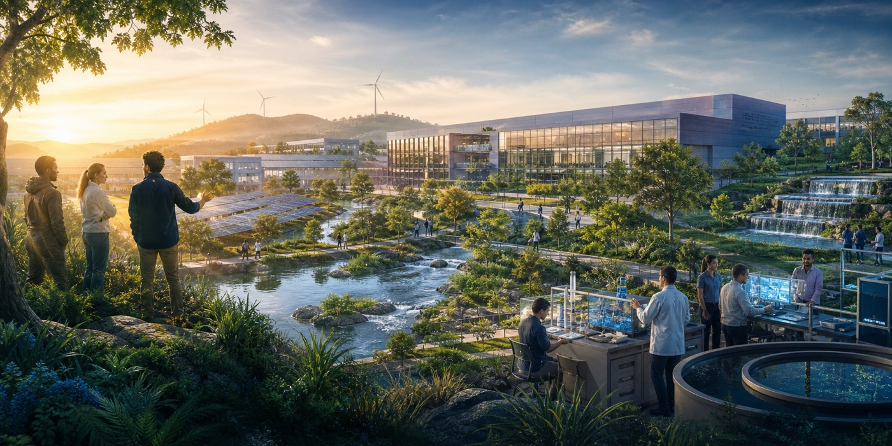
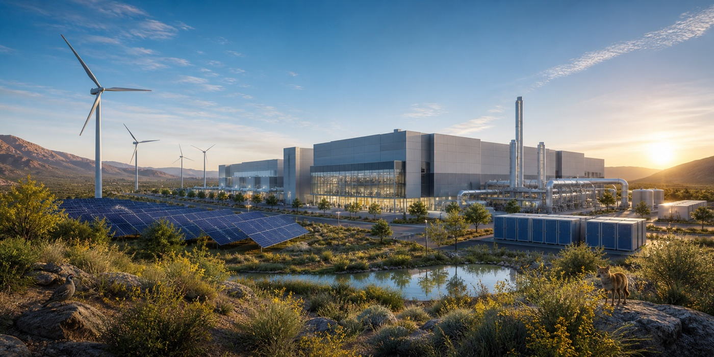

1968
Intel is founded

Robert Noyce and Gordon Moore founded Intel in 1968 with a commitment to continuous innovation.
Explore Intel's journey through innovation, environmental responsibility, and its commitment to a more sustainable future.
Explore Timeline💡 Desktop: Hover over cards to preview stories, then click "Open Full Story" to learn more.
📱 Mobile: Tap "Open Full Story" on each card to explore each milestone.

Robert Noyce and Gordon Moore founded Intel in 1968 with a commitment to continuous innovation.
Released in 1971, the Intel 4004 helped place a programmable processor onto a single chip.
Intel introduced the 8086 in 1978, establishing an architecture that influenced generations of personal computers.
Introduced in 1985, Intel's 32-bit 386 processor delivered more than twice the performance of the 286.
In 2006, Intel began shipping processors based on the Intel Core microarchitecture, emphasizing energy-efficient performance.

Intel introduced its 2030 RISE strategy to advance responsibility, inclusion, sustainability and enabling technology.

Intel committed to reaching net-zero Scope 1 and Scope 2 greenhouse gas emissions across global operations by 2040.
Intel reported using 99% renewable electricity across its worldwide operations in 2023.
Intel's inaugural global Sustainability Summit brought more than 140 organizations together in 2024.
THE NEXT CHAPTER
Three connected priorities for a more sustainable future.
Investing in renewable electricity and energy efficiency to work toward net-zero operational emissions by 2040.
Learn More about climate actionConserving water in manufacturing and supporting projects that restore water to local watersheds.
Learn More about water stewardshipKeeping materials in use through waste prevention, recovery, reuse, and recycling.
Learn More about circular economyUNDERSTANDING THE GOALS
Historical milestones draw on Intel’s history, newsroom, and corporate responsibility reports. Timeline images are AI-generated illustrations.
PROJECT REFLECTION
AI-generated translation or imagery can be useful for prototyping, but it is probabilistic: it may sound confident while getting a fact, cultural nuance, or accessibility detail wrong. I used human review, official Intel sources, and explicit image descriptions to check the result.
I would ask a localization engineer: How do you test RTL layouts with real users, especially when translated text changes length and reading order? The answer would help connect automated checks with the lived experience of Arabic-speaking visitors.
I built an accessible Intel sustainability timeline in English and Arabic. The project combines Bootstrap responsiveness, automatic RTL detection, keyboard-friendly dialogs, source-based content, and a validated newsletter demo. Localization is more than translation: it changes layout, interaction, and trust.